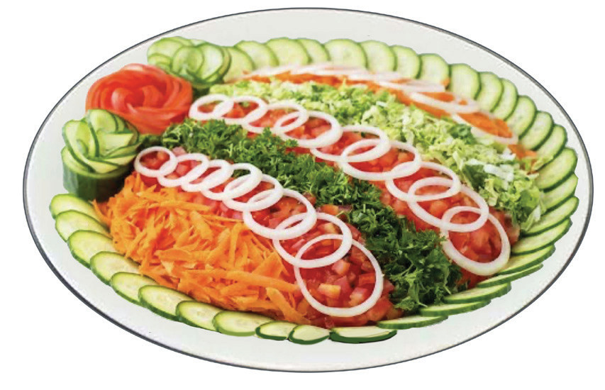

Activity 4.14
Preparation of fruit and vegetable salad
Follow the methods of preparing fruit and vegetable salad
(i) Prepare this salad using fruits and vegetables available in your area.
(ii) Why should overweight people consume vegetable salads?
Aranged vegetable salad
Ingredients (serve 4 people)
- 2 onions
- 2 cucumbers
- 4 tomatoes
- 1 carrots
- 1 small cabbage
- 1 bunch parsey
Method
- 1. Wash the ingredients
- 2. Peel and slice onions
- 3. Chop carrots, cucumbers, tomatoes and pasley
- 4. Shred cabbage
- 5. Arrange vegetables in a dish as shown in Figure 4.24.

81